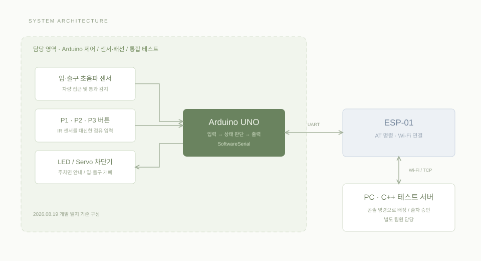

Arduino 제어
차량 접근과 주차면 상태에 따라 LED 안내와 입·출구 차단기가 이어지도록 제어 흐름을 다뤘습니다.
차량 감지부터 주차 안내와 출차까지,
센서 입력과 제어 동작을
연결한 3면 주차장 모형

Arduino 기초 학습 이후 센서와 제어 장치를 하나의 흐름으로 연결하기 위해 진행한 스마트 주차장 프로젝트입니다. 입구에서 차량을 감지하고 주차면을 배정받으면 LED로 안내하며, 주차면의 점유 상태에 따라 정상 주차와 오주차를 구분하도록 구성했습니다.
입구와 출구는 독립된 센서와 Servo로 제어합니다. Arduino는 현장의 입력과 출력을 처리하고, PC 테스트 서버는 콘솔 명령으로 주차면 배정과 출차 승인을 전달합니다.

주차면 입력은 IR 센서가 준비되기 전 버튼으로 대체했습니다. ESP-01과 Arduino는 SoftwareSerial로 연결되며, 서버와 주고받는 메시지는 1바이트 숫자 코드로 정의했습니다. 서버 개발과 통신 기능 전체를 개인 성과로 포함하지 않고, 시스템 연동 맥락으로 정리했습니다.
차량 접근과 주차면 상태에 따라 LED 안내와 입·출구 차단기가 이어지도록 제어 흐름을 다뤘습니다.
초음파 센서, 주차면 입력과 출력 장치를 연결하고 입력 상태와 실제 장치의 동작을 확인했습니다.
정상 주차·오주차·출차를 나누어 입력 변화와 제어 결과를 점검했습니다.
개발 일지에 설명된 로직을 재구성한 화면입니다. 실제 장치나 서버와 연결된 실시간 데모가 아닙니다.
초음파 센서로 차량 접근을 감지한 뒤 서버의 101·102·103 명령으로 P1·P2·P3를 배정합니다.
배정된 면의 점유는 정상 주차로, 다른 면의 점유는 오주차로 처리합니다. 오주차 해제 후 원래 주차면으로 재안내합니다.
출차 요청 후 서버 승인 코드 110을 받으면 차단기를 열고, 차량이 감지 범위를 벗어나면 닫으며 완료 코드 60을 보냅니다.
2026.08.19까지의 개발 일지와 정리 자료를 기준으로 작성했습니다. 전체 통합 시나리오의 통과율이나 성능 수치는 측정 근거가 없어 기재하지 않았습니다.
입력값을 읽는 기능과 실제 장치를 안전하게 동작시키는 기능 사이에는 상태 판단이 필요하다는 점을 배웠습니다. 차량 접근, 배정, 정상 주차와 출차를 구분해 살펴보면서 코드와 하드웨어를 함께 이해해야 문제의 범위를 좁힐 수 있었습니다.
다음 프로젝트에서는 먼저 입력·출력과 정상·예외 시나리오를 정리하고, 각 기능의 확인 결과를 로그와 영상으로 남기겠습니다. 한 번의 시연보다 반복해서 설명하고 확인할 수 있는 구현을 목표로 하겠습니다.